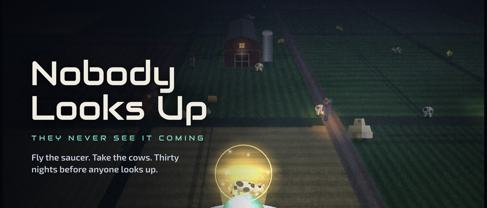

Nobody Looks Up
Steal Earth. Start with cows.

A premium arcade game for iPhone and iPad. You fly a flying saucer over farm country from inside a glass cockpit, lock the tractor beam on cows, chickens and sheep, and get out before the farmer finishes loading his shotgun. Thirty nights, a story told by the alien who built the people below, zombie nights, a wanted level that calls in tanks, and a valley that never looks up. Until it does.
App Store Trailer (MP4) Request a promo codeFact sheet
- Developer
- Carlos Zepeda (solo), California
- Release
- November 6, 2026 (iOS); Android in closed test, Google Play to follow
- Platforms
- iPhone, iPad (iOS 15+). Portrait and landscape. PlayStation, Xbox and MFi controllers.
- Price
- $2.99, one price. No ads, no in-app purchases, no account.
- Size
- Under 5 MB. Every sprite, sound and song is drawn or synthesized in code.
- Rating
- 13+ (cartoon violence)
- Languages
- English (and whatever Enki is speaking)
- Current version
- 1.2 — Turkey Week, November 23–29
- Press contact
- Alienmajik@proton.me
- Links
- App Store · Support · Privacy
About the game
Earth has eight billion people, forty million cows and zero anti-saucer defenses. Nobody Looks Up puts you in the pilot seat with one job: take everything that isn't bolted down and get home before anyone notices.
Every night you clear a mission, and every night the locals get a little more organized: pitchforks become pickups with spotlights, spotlights become a helicopter, then a tank. A GTA-style wanted level climbs with every catch. Every fifth night sends a boss — a bull that fights the beam, camera drones, jets with a sonic boom, a black van that jams the beam. Then the crate in the barn leaks, the moon goes red, and Zombie Night asks you to cure the horde with the same beam you've been stealing with.
Your co-pilot is Enki, the engineer who made the people below 450,000 years ago and designed them to look at the ground. The ship comes back every 3,600 years to count what it left. This is the pass where the count goes wrong: a story card before every night, a newspaper that prints a headline about you every morning, and by night 30 the whole valley in one field with its head tilted back.
Built by one person. The whole game — sprites, sound effects, four story scores and the title theme — is generated in code at launch, which is why it downloads in a few seconds and runs on a seven-year-old iPhone.
Features
- 30-night campaign with a six-chapter story, a Gazette headline every night, Blue Book memos and an ending
- Glass cockpit view with cracks that spread across the canopy, or pull back to third person
- Wanted level: five eyes that bring the pickup, the army, a second helicopter and a tank
- Bosses every fifth night: bull, helicopter pair, tank, camera drones, jets, Blue Book jammer van
- Zombie Night and Last Light: hold the barn, cure the horde, keep the lamp lit until dawn
- Daily challenge with a weekly twist, Endless mode, friend challenge codes with a score to beat, Game Center leaderboards
- Nine species with rare and golden variants, a 27-slot collection, 30 badges, six saucer tools, seven upgrades, saucer paints
- Seasonal: Turkey Week (Nov 23–29) adds wild turkeys, a pardoned bird with a pickup escort, the Tom, Thanksgiving dinner at one long table and Black Friday in the dark
Video
20-second gameplay captures, no voice-over, game audio. Free to embed and re-cut. YouTube: YOUTUBE_LINK
Screenshots (1080×2160, click for full size)


Icon and key art


All assets on this page may be used in coverage of the game. Right-click to save; the press/ folder holds everything at full size.
Lines from the co-pilot
"Nobody down there looks up. I designed that too."
"That's not a cow. That's Brisket. He's in the Audit twice already, as 'bull' and as 'incident'."
"The Moon rings when something hits it. It's a garage. Nobody down there has asked why."
"We didn't design the turkey. We placed it."
About the developer
Carlos Zepeda is a solo developer in California. Nobody Looks Up is his first game: a year of nights spent drawing cows in code and arguing with a fictional alien about whether the farmer should get a shotgun. He is available for interviews, promo codes and screenshots at any size by email.